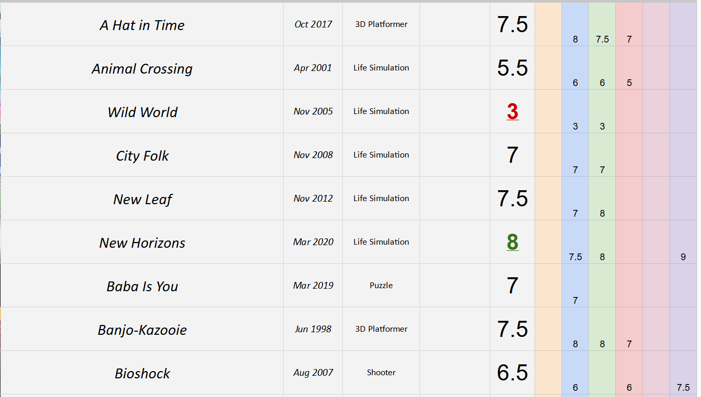
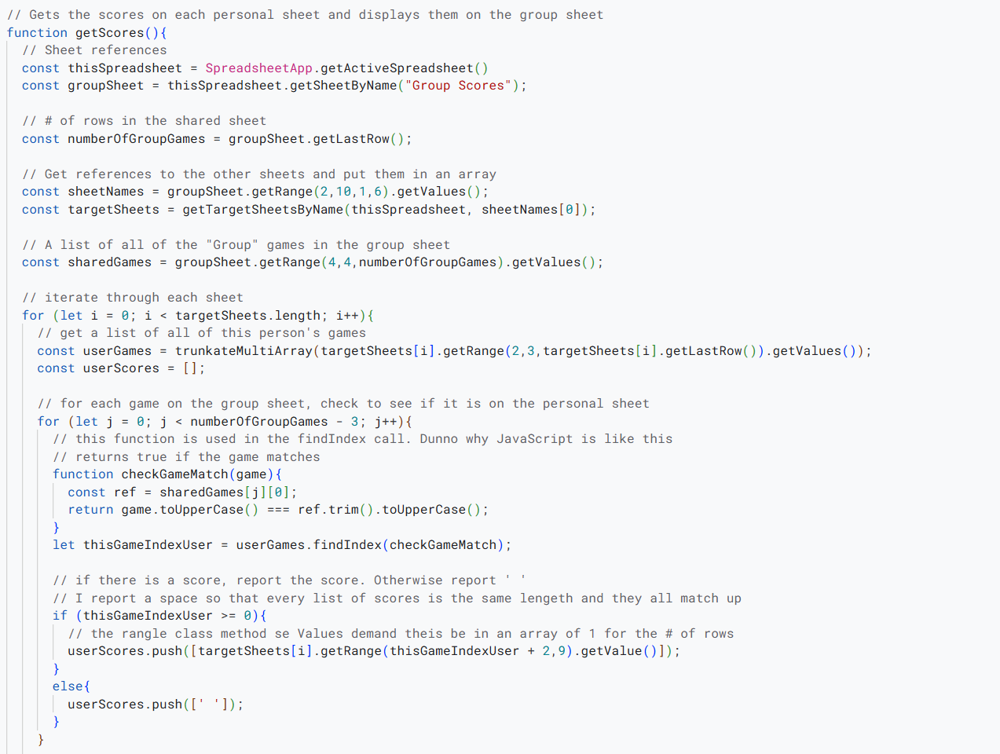
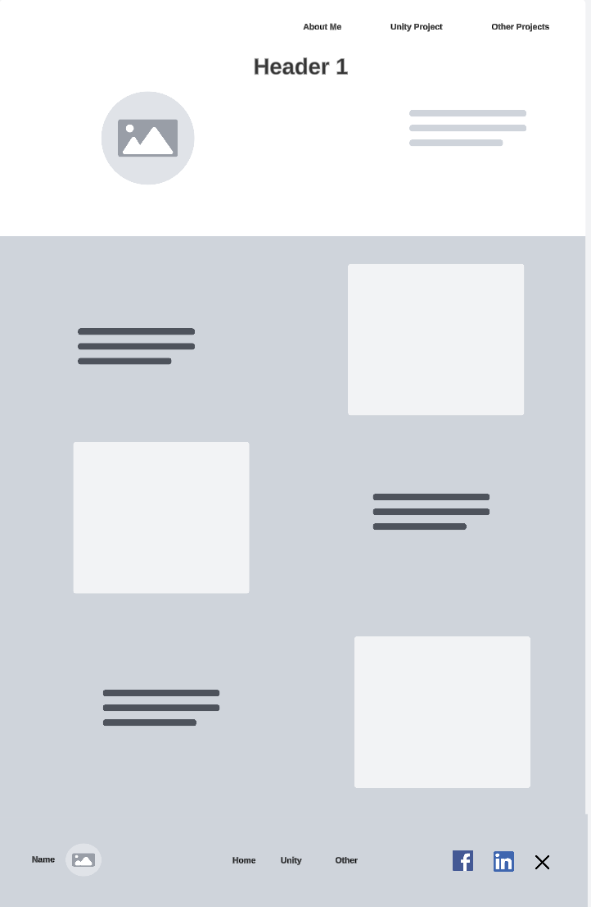

Other Projects
Much smaller in scale than my Unity videogame, I have dabbled in a couple other projects as well. Namely:
- Google Sheets custom AppScript
- This webpage
I thought it would be fun to have a place where my friends and I could rank our favorite TV shows, videogames, albums, and other media, and then have Google Sheets average our scores together.
 I wrote some custom script to collect data from the other sheets, determine which titles are the most popular among them, and print those titles on a master sheet alongside an average review score.
Aditionally, I wrote several smaller functions with various goals such as displaying a list of all currently unfinished games, and randomly selecting one of those games to play next.
Though I have no particular interest in web development, I designed and coded the HTML and CSS for this site as well. You can view my scripts using F12, or by looking on my github.
